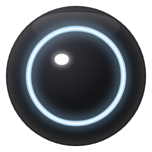

What can I do for you?
I work inside your own tabs and on your computer, without touching your mouse or keyboard. Everything I do is written in the action log.

npm install -g @anthropic-ai/claude-codeclaude in a terminal and follow the promptsAll tabs (O Link): O's own extension, so O can work in every tab you have open, with no tab picking. Set it up once with Connect my Edge. Picked tabs: the store's Playwright Extension; O only sees tabs you put in its group. Invisible browser: no setup, but results don't appear in your tabs. In every mode, O never makes payments.
OpenAI-compatible. Set base_url to the URL above and the token as the API key. Localhost only.
Same shape as Claude Code's mcpServers. O routes these through its engine and also hands them to Claude Code, so both can call them.
Without Docker or an E2B key, risky steps fall back to the sandbox folder and I say so in the action log. The key stays on this computer and never appears in the log.
More candidates means I try several plans and keep the one that passes checks in the fewest steps; 3 is a good number on Linux.
I plan a few steps, look at the screen, then plan the next few, up to the turn limit. A grounding answer below the confidence gate is thrown away and the fallback model answers instead.
Cards are built from checked, declarative frames, never from raw HTML. Previews run in a locked iframe that can only talk to me through messages, and every message is logged.
Hide, browser and path settings apply to O's own browser.
Nothing new since you last looked
Every job I run shows up here, newest first
I work inside your own tabs and on your computer, without touching your mouse or keyboard. Everything I do is written in the action log.